Overview
Travel memories are deeply sensory — the quality of light in a particular afternoon, the colour palette of a city you loved. Yet when we try to share them, we reach for photos that show the place but rarely convey how it felt. Luma was an attempt to close that gap.
Luma is an immersive, physical installation that lets people re-live a travel memory inside a personal dome — an umbrella. Colours extracted from a user's photo are translated into light and ambient sound, creating a calm, meditative space unique to that memory. In shared settings, two domes can approach each other and "contaminate" one another's colour fields, turning private memory into a collective experience.
I contributed to the initial concept and idea generation, and was hands-on during the creation of the physical installation. My main individual lead was the user testing: I planned both rounds, facilitated the sessions, and synthesised the insights that drove our iterations.
- Figma
- Arduino / ESP32
Embodied Interaction Studio · MSc Digital & Interaction Design, Politecnico di Milano
Concept & Prototyping
Rooted in the metaphor of the umbrella as a personal dome, Luma explores how light and sound can embody memory. Photos become palettes, not pictures — preserving the feeling of a place rather than its record. When multiple domes meet, their colour fields blend, turning private memory into something shared and visible.
We used a Research through Design approach: experimenting with future practices through objects that might be. The research question driving us was how feelings experienced while travelling could be recalled through colour, in a personal and meditative space.
Design process
Research
Travelling research & embodied interaction case studies
Define
Focus on re-living past travel memories
Research
New digital art case studies
Define & Prototype
Final Luma concept & first prototype built
Test
First user testing & prototype refining
Test
Second user testing & prototype refining
First prototype
The first prototype used an Arduino Uno, a powerbank for portability, an accelerometer to detect twisting, a proximity sensor to detect a second umbrella, and LED strips as the main interface. To translate images into colour, we detected the overall RGB distribution for the pre-twirl state, then divided each image into four sections whose average colours appeared in the LEDs after the twirl.
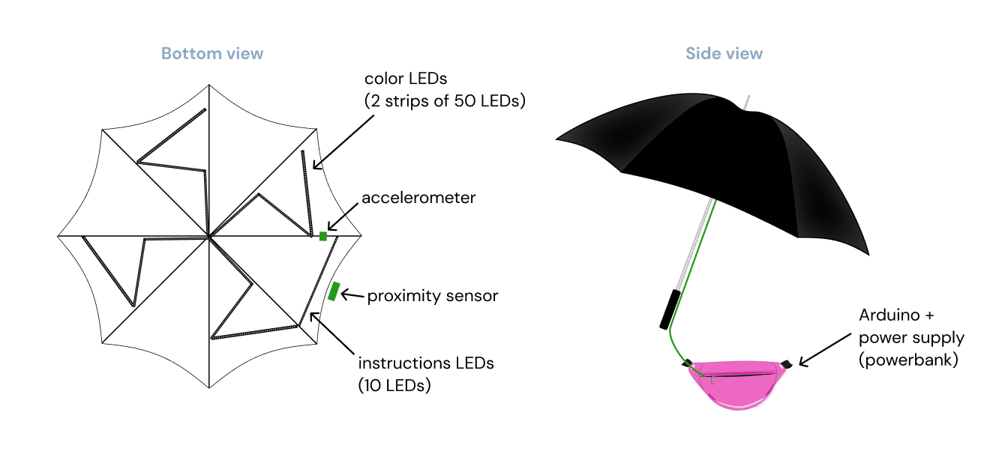
User Testing
We ran two rounds of user testing, using each to identify problems, iterate, and retest. My role across both rounds was to plan the sessions, facilitate them, and synthesise the findings into concrete design changes.
Round 1 — 8 users
The research questions were: does twirling feel natural? Do users associate colours to images? Do users understand the two-umbrella interaction? The results were instructive — people didn't naturally understand the twirling gesture, and many stood still rather than moving through the space. The two-umbrella interaction was unclear without a path guiding users toward it.
Interaction storyboard & test flow
Instructions
Explanation of the whole experience before entering
Choose an image
A palette is assigned based on the image
Colors uploaded to umbrella LEDs
First RGB colors are shown on the umbrella
Open the umbrella
Twirl the umbrella
Get close to another umbrella
Contamination of colors
When the two umbrellas touch, colors get transferred to the other
Questionnaire
Asking users about their experience and impressions
Reward
Biscuits 🍪
Problems & opportunities
Some users didn't understand what they had to do at first
Possible solution
- Telling users to follow instruction LEDs
Some users were scared of moving because of all the cables showing
Possible solutions
- Hide the cables
- Create a path to follow
Some colors were too similar to the first RGB colors — after the twirl, users didn't notice the change
Possible solutions
- Switch LEDs off and on with new colors
- Choose more distinct colors
The interaction between umbrellas was not clear — most people stood still in the centre of the room
Possible solution
- Create a floor path guiding two umbrellas to meet
The twirl sensor is too sensitive
Possible solution
- Solve with code
Cables kept unplugging because they were too short
Possible solution
- Use longer cables
Can't keep LEDs connected to Arduino for long periods of time
Possible solution
- Reduce the number of LEDs
Having the Arduino board in a separate bag limits the twirling action
Possible solution
- Find a way to attach the Arduino board directly to the umbrella
The proximity sensor with two umbrellas didn't work
Possible solution
- Use ESP32 board with Bluetooth to detect proximity
Round 2 — 16 users
To address what we found, we upgraded to an ESP32 board (compact, Wi-Fi, Bluetooth), added longer cables, lined the inside of the umbrella with cotton to diffuse the LEDs, and introduced a physical path guiding users toward the centre where the shared interaction happens. The testing was conducted in Politecnico di Milano's Edme Lab — a meditative space with rain projected on three walls and ambient rain sound throughout.
Side view
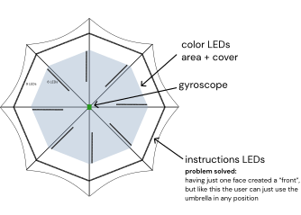
Top view
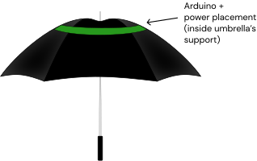
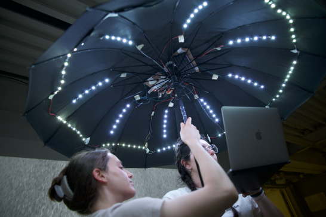
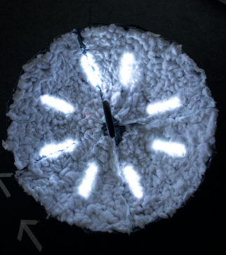
The three redesigned interactions, each building on the previous:
Opening the umbrella
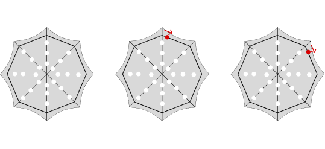
White instructional LEDs pulse when the umbrella opens, then begin rotating around the rim — prompting the user to twirl.
Twirling the umbrella
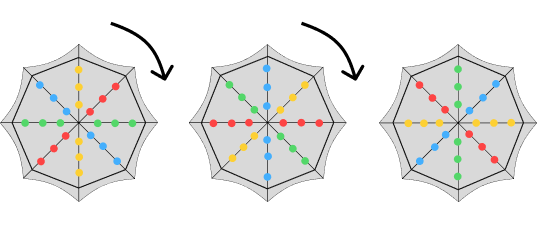
After the twirl, the LEDs display the colors extracted from the user's uploaded travel image — one color per spoke, spinning continuously.
Getting close to another umbrella
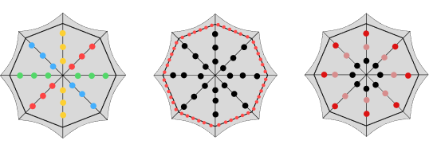
When two umbrellas approach, a proximity alert triggers — the personal colors blend and contaminate each other's LED patterns.
Testing session
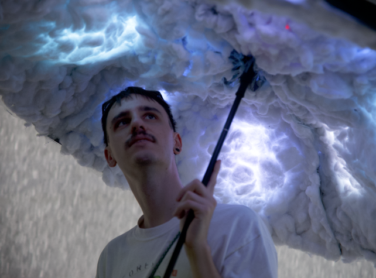
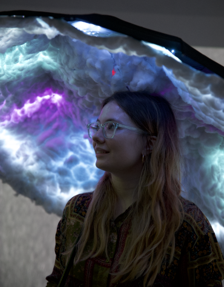
Full interaction storyboard
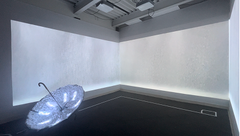
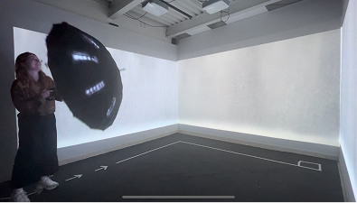
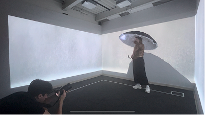
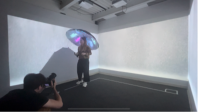
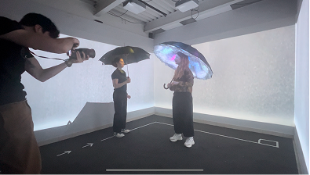
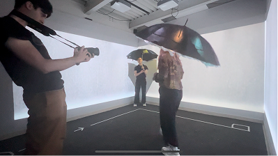
Reflection
Luma is one of the projects I enjoyed the most, because the design problem was fundamentally about feeling rather than function. There's no right or wrong way to experience a memory — which made the design challenge much harder and more interesting than a typical UX brief.
Running the user testing was where I learned the most. The first round quickly revealed that the interaction wasn't as intuitive as we assumed: people didn't naturally understand the twirling gesture, and many stood still rather than moving through the space. What I found valuable wasn't just discovering those problems — it was realising how differently people experience the same interaction.
The second round, after integrating a clearer path, the ESP32 upgrade, and the rain projections, confirmed that context and atmosphere matter as much as the interaction itself. Setting shapes meaning. That's a lesson that applies far beyond installation design.
After the second round, we also imagined the ideal version of Luma: a public exhibition space where users could choose between a personal or collective experience based on their mood — a quieter solo dome on one side, an open shared space on the other. The ideal interaction flow below integrates the ideas collected through interviews and questionnaires during testing.
Ideal scenario
Sending pictures to the umbrella
The user enters the installation and sends the picture through a QR code — a web app where they can upload, not a form.
↓
The web app also allows people to know more about the installation and get the color reference of the other umbrellas they interact with.
Interactions with the umbrella
Colors from the image are projected on the floor so that when two umbrellas get close, the contamination is clearer.
↓
Making friends and starting conversations with people through color contaminations.
Technological features
Haptic on the stick: it gets stronger when another umbrella is near.
Ideal interaction flow
Pre-interaction
Main interaction
Credits
Professors: Fiammetta Costa, Carlo Emilio Standoli
Team: Camila Contreras, Francesco Scaramuzzi, Alessandra Sgariglia, Sara Sorrentino, Andrea Villarreal